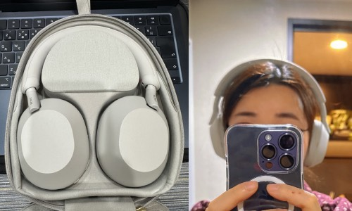

2024-05-15 노이즈 캔슬링 헤드폰을 처음 사게된건, 예전에 살던 하카타 캐널씨티앞의 맨션이 굉장히 시끄러웠던게 이유였다. 그리고 번화가, 큰길가에서 사는건 좋은 생각은 아니구나 하는 교훈을 얻었다. 의외로 안전하고 늦게다녀도 사람이 많아서, 생각보다 무섭지 않다! 라는 장점도 있긴한데. 특히나 그집은 앞에는 큰 경찰서, 소방서도 있어서 매일밤 출동하는 소리와 근처 건널목의 음악소리...나는 그걸 곡소리라고 불렀다. 좀 처량한 소리가 섞인, 끊임없는 잡음의 향현, 밤에는 취객들의 소리까지 정말 그런 난리도 난리가 없었다. 내가 살던 시절이 코로나때 였던걸 생각하면,,지금은...더 굉장해졌겠지? 그래서 그때 처음 샀던 것이, sony wh-1000xm4였다. 나름 만족하며 잘 쓰다가, 생각보다 그렇게 많은 시간을 사용하지 않고 그뒤로 이어폰인 wf-1000xm4, 에어팟프로는 그뒤에 산건지 언제산건지 확실히 기억은 안난다. 그냥 항상 있던 그런 존재인 느낌이고. beoplay ex까지 사면서 그뒤론 외출시에 이어폰을 돌려쓰거나 한 것 같다. 이어폰에 관해서 잠시 언급하자면, xm4는 귀에서 자꾸 도망가서 팁을 바꿔서 쓰거나 하다가 방치, -> 메루까리행 에어팟 프로는 통화용, beoplay ex는 외출용. 그리고 귀국했을때 싸게팔길래 쿠팡에서 구입해본 버즈2프로는 나에게 귀통을 주었어;; ㅜㅜ  도쿄의 조용한 집으로 이사하고 나서는, 그다지 필요를 느끼지 못하다가 노켄쓰고 일하면 잘되더라는 경험, 그리고 어쩌면 심심함으로 메루까리...에서 xm5를 사게됨. 이때 소리가 이상하게 들림(지금 생각하면 귀병탓인듯..오늘 병원간다 ㅠ), 그리고 왜이렇게 요다같지! 라고 생각하고 심지어 강력한 담배냄새가 배여있어서인지 굉장히 불만스러웠던터라 방에 내놓았다가 냄새가빠지고 바로 재판매하긴했는데, 지금와서 그때 찍어놓은 사진을 보니, 의외로 괜찮은 것 같은데. 그때는 왜 그렇다고 생각했지.. 그래서 이것에 관해선 계속 삽질중인게, 부모님 놀러오실때 면세점에서 남색을 예약했다가 취소, 그리고 다시 후회 결국 메루까리에서 검은색을 재구매, 그러나 판매자가 미적거리면서 안보내 줌 이라는 패턴을 반복중 이러다 곧 xm6이 나와서 다시파는거 아닌가. 그리고 소니의 최근 신작 강력한 저음이 장점이라는 ULT wear를 아키바 요도바시에서 들어봤는데 저음이 너무 너무 쎄 머리가 울리는 느낌 좋아하면 추천 bose quiet comfort ultra는 할인에 쿠폰까지 주면서 사라는 아마존의 꼬득임에 넘어감. Px7s2e는 그린색이 너무 마음에 들어서 재고가 있던 오다이바 빅카메라에가서 직접 줏어옴. 지금 가진 것중에 가장 마음에 드는물건이라 잘한거 같다! ...그리고 또 그 아마존에서 5천엔 포인트를 주길래 뭘사지 연구하다 예뻐서 사본 beoplay hx 이어폰 ex를 잘 쓰고 있기도 하고 동그란 이어컵 모양도 마음에 들고..(단점은 구조상 중간이 뚫린 이어패드 커버를 못쓰는듯? 커버안쓰면 불편해서 통으로 덮은거 써보는중이긴함.) xm5와 마찬가지로 이것도 발매일이 꽤 된 물건이라 중고로 올라와있는걸 샀는데, 의외로 정수리가 불편하지 않고 편한 소리가 나서 생각보다 괜찮은 물건인거 같음. 결론은 헤드폰 사사사했다인데, 이거 좀 길게 써보지 않으면 머리통이 불편하거나 하는 문제가 있어서 나름 고르는 중이었다고 해두자. 내 정수리가 뾰족한 편이라서 그런건지, 헤드밴드가 좀 뾰족하게 말려있는 편인 px7s2e가 불편함 없이 편했고, beoplay hx도 착용감이 편안함. sony와 bose는 흘러내리는 느낌이 있는데. 뭔가 미묘하게 불편하지만 노캔이 잘됨.